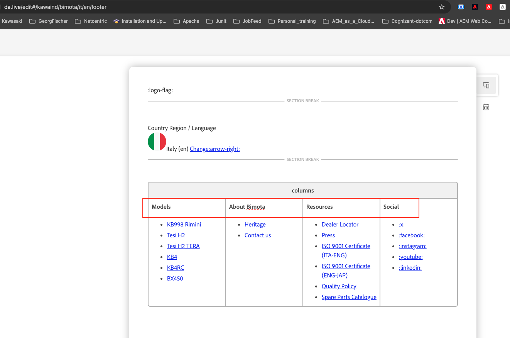
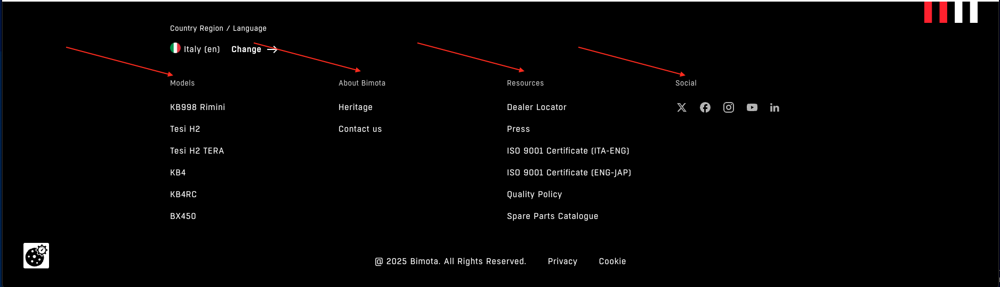
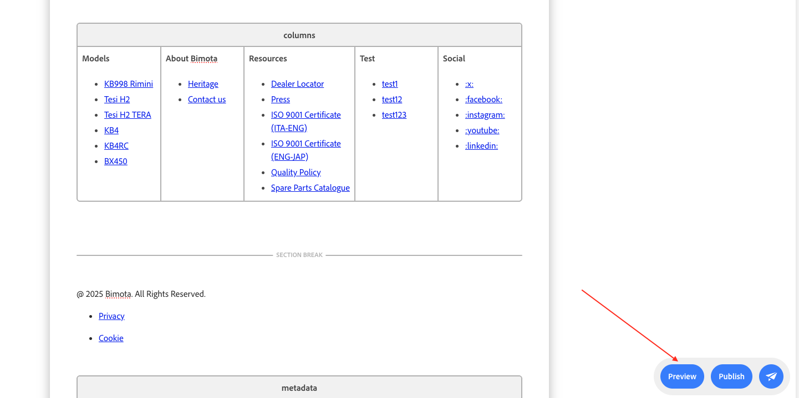
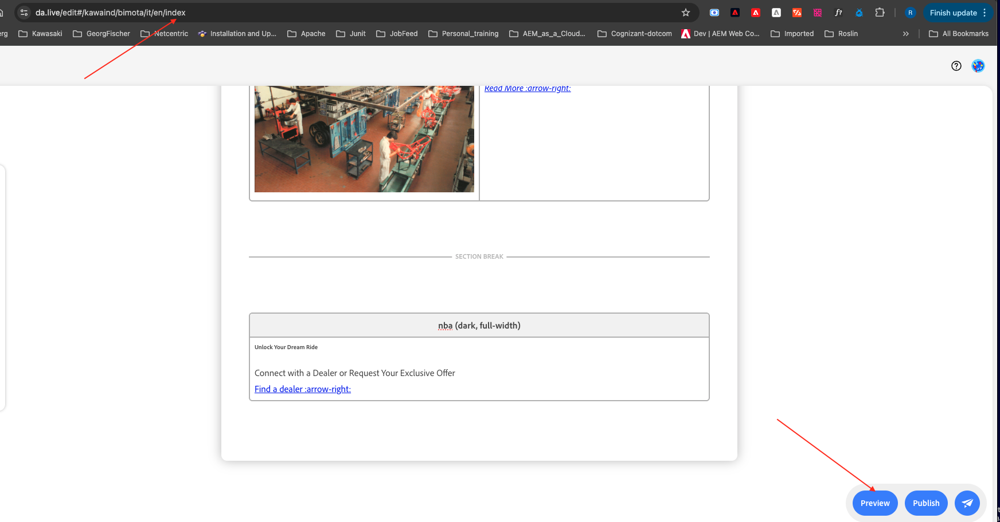

Footer
The global footer: language selector, four link columns, legal links, SEO metadata.
The Footer block is a globally consistent component placed at the bottom of all pages on the Bimota website. It provides users with quick access to key navigational and informational links, enhancing both usability and site structure.
The four content sections
The footer is composed of a language selector plus four content sections, each with a defined title:
- Models — links to Bimota's current products lineup
- About Bimota — information about the brand, heritage, and company background
- Resources — useful links to resources like ISO and quality documents, and the dealer locator
- Social — icons/links to Bimota's official social media channels
Plus Legal Links: Privacy Policy and Cookie Policy. These support compliance with data protection regulations such as GDPR and keep users informed about their data.
Editing the footer for a locale
Navigate to the respective country's path where the footer document is available (e.g. da.live/#/kawaind/bimota/jp/2_en) and open the footer document to edit it. Near the top you'll find the :logo-flag row — the Country / Region / Language selector, e.g. a flag icon next to “Italy (en)” with a “Change” link. Below it is the columns block holding the four sections described above.
Adding a new column
- Open the footer document and click Edit block, then click the “add column” icon in the block toolbar.
- Type the new section's title in the header cell (e.g. “Test”), and add your links as a bullet list underneath it.
- Link every link under the new section: select the text, click Edit link, and paste the destination path (e.g.
/it/en/dealer). - Click Preview, then navigate to the locale's index page and click Preview there too, to confirm the new column appears correctly across the site (the footer is shared, so checking from a real content page confirms it's wired up correctly).
Metadata: keeping the footer document out of search results
The footer document itself carries a small Metadata table with Robots: noindex, nofollow. This tag prevents search engines from indexing or crawling the standalone footer block URL in da.live. It ensures only full content pages are indexed, maintaining SEO hygiene and avoiding duplicate or irrelevant entries in search results. Don't remove this row when editing the footer.
What you fill in
| :logo-flag row | The country/region/language selector: a flag icon, the current locale (e.g. “Italy (en)”), and a “Change” link pointing to #modal-country-selector. |
| columns block | One column per footer section (Models, About Bimota, Resources, Social by default — add more as needed). |
| Column header | The section title cell at the top of each column, e.g. "Models". |
| Column links | A bullet list of links under each header. |
| Legal links | Privacy Policy / Cookie Policy links, placed after the columns block. |
| metadata: Robots | Set to noindex, nofollow so the standalone footer document itself isn't indexed by search engines (see below). |

The footer document in da.live: the :logo-flag selector and the columns block (Models / About Bimota / Resources / Social).

The footer as rendered on the live site.

Adding a new column: Edit block → add column, then linking each item in the new section.

The rendered footer after publishing, showing the new column in place.
Copy/paste snippet
| :logo-flag | | |---|---| | columns | | |---|---| | Models | About Bimota | Resources | Social | | [KB998 Rimini](/it/it/kb998) [Tesi H2](/it/it/tesi-h2) | [Heritage](/it/it/heritage) [Contact us](/it/it/contact-us) | [Dealer Locator](/it/it/dealer) [Press](/it/it/press) | [X](https://x.com/bimota) [Facebook](https://facebook.com/bimota) | [Privacy](/it/it/privacy) [Cookie](/it/it/cookie) | Metadata | | |---|---| | Robots | noindex, nofollow |